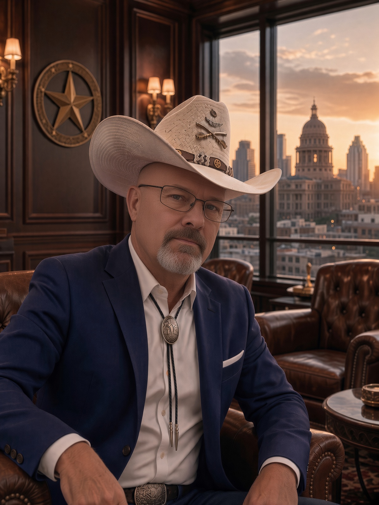

Fire & Emergency Services
34 years in fire and emergency response, with two decades serving at Fort Hood Fire & Emergency Services.
34 YEARS OF FIRE & EMERGENCY SERVICE
A lifetime of service to our country and our community. Now, William Greg Smith is ready to serve Copperas Cove on City Council with accountability, fairness, and action.

“You give me a task, it will get accomplished. If there is wrongdoing, I am going to seek it out and address it.”
William Greg Smith
MEET WILLIAM GREG SMITH
I am a retired firefighter with 34 years of service, including 20 years with Fort Hood Fire & Emergency Services. I also proudly served in the United States Coast Guard as a firefighter and Damage Controlman, serving overseas and aboard several large Coast Guard cutters.
My career has been built around protecting people, solving problems under pressure, and taking responsibility when the stakes are high. I have served our country nationally and our community here in Copperas Cove as a firefighter and emergency responder.
I assisted in disaster-response efforts during Hurricane Harvey in Houston and during major flooding events across Central Texas. I remain active in my local VFW and previously served as Post Commander of American Legion Post 582 in Copperas Cove.
A RECORD OF SERVICE
34 years in fire and emergency response, with two decades serving at Fort Hood Fire & Emergency Services.
Served as a firefighter and Damage Controlman, including overseas duty and service aboard large Coast Guard cutters.
Responded to Hurricane Harvey in Houston and supported flood-response operations across Central Texas.
Active in the local VFW and a past Post Commander of American Legion Post 582 in Copperas Cove.
HOW I LEAD
I believe public service should work the same way emergency service does: identify the problem, tell people the truth, make a plan, and finish the job.
Wrongdoing should be addressed, not ignored because it is inconvenient or politically uncomfortable.
When I accept responsibility for a task, I expect it to be completed and completed well.
I am direct and I will ask hard questions, but I believe everyone deserves to be treated fairly.
The job is about the people of Copperas Cove and practical results for the community.
ROOTED IN COPPERAS COVE
Retirement from the fire service did not mean retirement from service. I remain active in the local veteran community and believe experience matters most when it is put to work for others.
Copperas Cove deserves leadership that understands duty, preparedness, fiscal responsibility, public safety, and the importance of earning the public’s trust.
Join the campaignTHE NEXT CALL TO SERVICE
GET INVOLVED
Volunteer, request a yard sign, host an event, endorse the campaign, or send William a question.
Follow William Greg Smith for Cove City Council on Facebook